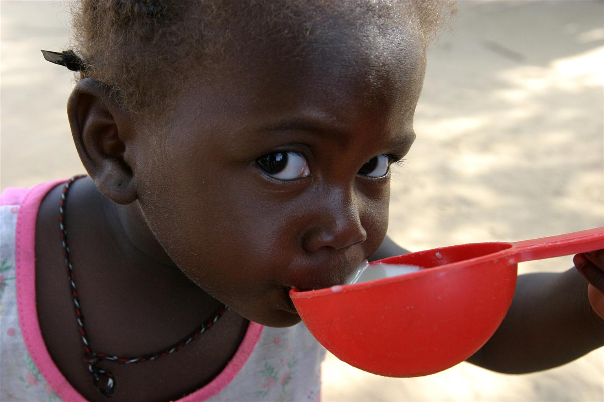
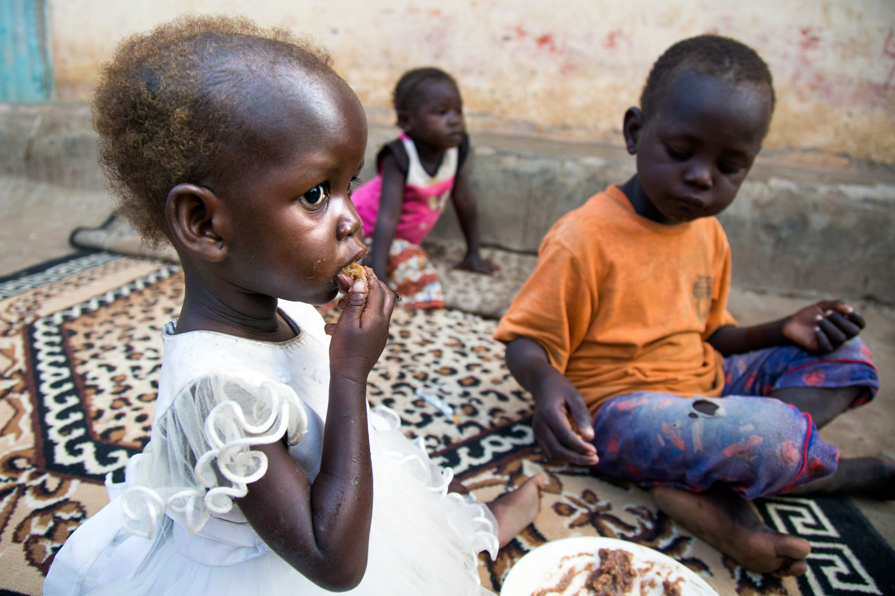

Alultápláltság
Az alultápláltság nem áll meg az éhségérzetnél.
Világszerte több millió gyermek szenved az alultápláltság valamilyen formájától. Az alultáplált gyerekek nem csak éheznek: sokkal nagyobb mértékben vannak kitéve a súlyos betegségeknek és járványoknak, az ivóvíz ellátásuk sok esetben akadozik vagy nem megoldott, a nem megfelelő energiaellátásuk miatt testük és agyuk nem tud az optimális módon fejlődni, veszélyeztetve ezzel a felnőttkori boldogulásukat.
A megfelelő mennyiségű és minőségű táplálkozás az emberi élethez nélkülözhetetlen
Az emberi szervezet sebezhető, különösen, míg fejlődésben van. A táplálkozás óriási hatással van egy gyermek szervezetének fejlődésére. Számos gyerek szenved a helytelen táplálkozás miatt; míg a világ egyik felében a súlyos alultápláltsággal küzdenek, a másik felében az elhízás jelenti a problémát. A helytelen táplálkozás következményei sokszor láthatatlanok maradnak, míg túl késő nem lesz.
Az alultápláltságot és az elhízást is hasonló eszközökkel lehet megelőzni. A megfelelő, tápanyagokban gazdag táplálkozás – főleg az első 1000 napban – nagyon fontos a fejlődéshez.
- Krónikus alultápláltsággal küzd körülbelül 20 millió óvodáskorú kisgyermek, Afrika és Délkelet-Ázsia különösen érintett területek
- Az 5 év alatti gyermekhalálozás 35%-a az alultápláltsághoz köthető.
- Rohamosan nő a félévnél fiatalabb, krónikus alultápláltsággal küzdő csecsemők száma.
A krónikus alultápláltság kóros soványsághoz vezet, amely során az agy és a test nem kap elegendő tápanyagot a fejlődéshez. A kóros soványság következményei akár visszafordíthatatlanok is lehetnek, a szellemi fejlődés elmaradása pedig alacsony iskolai teljesítményhez vezet. Az iskolai végzettség nélküli gyermekek pedig rendkívüli módon ki vannak téve a gyerekmunka kegyetlenségeinek.
A rossz táplálkozás több tényező kombinációja: nem megfelelő fehérje-, energia- és tápanyagbevitel, gyakori fertőzések, betegségek, hiányos egészségügyi szolgáltatások, és rossz minőségű víz és higiéniai körülmények
Az alultápláltságra jellemző, hogy 6-18 hónapos korban alakul ki. Ebben a életkorban az agyi fejlődés és a testi növekedés különösen gyors tempóban zajlik. A kisgyerekek kifejezetten ki vannak téve az alultápláltság veszélyének, ha az elfogyasztott ételek alacsony tápanyagtartalmúak és nem megfelelő mennyiségű ásványi anyagot tartalmaznak. Mindezeken felül a gyerekek tápláltsága nem megfelelő, ha meghatározott tápanyagok túl későn vagy korán kerülnek először az étrendjükbe.
1990 óta elérhetőek a elkészítést nem igénylő tápanyag szeletek, ennek következtében a jelentések alapján a krónikus alultápláltság kezeléséhez nem szükséges a kórházi ellátás.
Mind katasztrófahelyzetekben, mind fejlődő országokban az UNICEF programjai segítenek lefektetni a helyes táplálkozás alapjait, hogy kezeljék, illetve megelőzzék az alultápláltság minden formáját.
Az UNICEF következő cikkéből kiderül, hogyan közd az UNICEF az éhezés felszámolásáért.